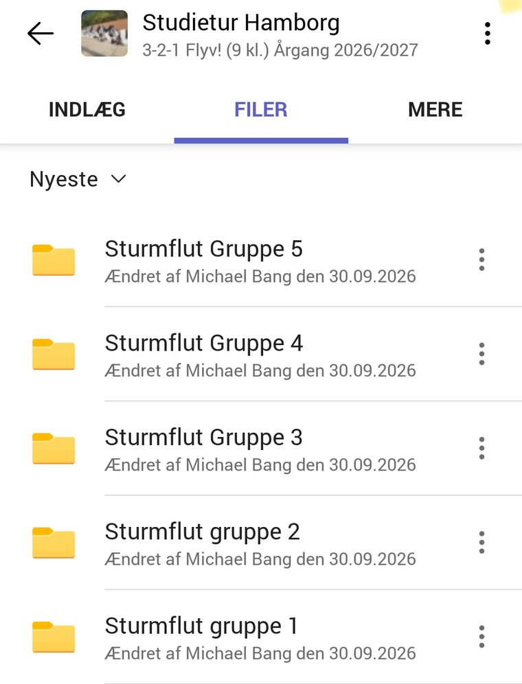

Querschnitt — die zwei Ebenen
Promenaden ligger 4,5–5,5 m over havets middel, warften 7,5–8,3 m. De stiplede linjer er stormfloderne i 1962 (5,70 m) og 1976 (6,45 m).
Eure drei Fotos
Eure Route — fünf Orte
Grøn ring: her starter I. Rød ring: her slutter I. Kortet er skematisk — det viser afstande og retninger, ikke gader. Vandet er ikke tegnet.
Jeres rute er jeres egen: I starter i Lohsepark und Elbarkaden, og ingen anden gruppe starter samme sted. Regn med cirka 4.5 km at gå i løbet af dagen — det hele på gåben, ingen ubahn. Minuttallene er et gæt, ikke en pligt. Møder I en anden gruppe, er det helt i orden: I fotograferer alligevel hver jeres ting.
1. Lohsepark und Elbarkadenca. 15 min
Magdeburger Hafen
↓ ca. 1000 m til Baakenhafen — 12 min at gå
2. Baakenhafenca. 30 min
Hafen.City.Horizonte, Baakenallee 33
↓ ca. 2150 m til Dalmannkai und Am Kaiserkai — 27 min at gå
3. Dalmannkai und Am Kaiserkaica. 20 min
Die Promenade am Sandtorhafen
↓ ca. 300 m til Speicherstadt — 4 min at gå
4. Speicherstadtca. 20 min
Kibbelstegbrücke und der Fleet dahinter
↓ ca. 200 m til Sandtorhafen — 2 min at gå
5. Sandtorhafenca. 20 min
Magellan-Terrassen
↓ I slutter præcis dér, hvor vi mødes.
Frokost
I sørger selv for frokost, men gruppen spiser sammen — regn med cirka 40 minutter. Der er mad ved Überseequartier og Überseeboulevard, både ude og inde.
Wortliste — 18 ord, I får forærende
| die Sturmflut | stormfloden |
| der Deich | diget |
| die Warft | warften, den kunstige bakke |
| das Fluttor | flodporten |
| der Dammbalken | skottet, bjælken |
| die Rille | rillen, sporet |
| der Gehweg | fortovet |
| die Tiefgarage | parkeringskælderen |
| der Fluchtweg | flugtvejen |
| der Ziegel | murstenen |
| der Schwimmsteg | flydebroen |
| der Wasserstand | vandstanden |
| der Höhenunterschied | højdeforskellen |
| die Ebene | niveauet |
| überschwemmen | at oversvømme |
| das Erdgeschoss | stueetagen |
| die Stufe | trinnet |
| hieven | at hejse |
Fotoregler
- Der skal være mindst én fra gruppen med på hvert billede. Uden et menneske kan man ikke se, hvor stort noget er.
- Tag højst fem billeder pr. stop. I skal vælge undervejs, ikke bagefter.
- Hold telefonen vandret. Billederne skal bruges i et oplæg.
- Døb filerne gruppe_stop_kort-tekst — fx 3_dalmannkai_flodport.
- Læg billederne i Teams løbende — efter hvert stop, i jeres egen mappe under Filer. Vi følger med undervejs, så vent ikke til I er hjemme.
